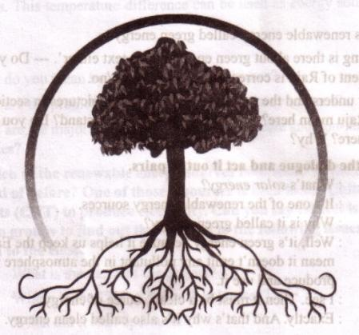
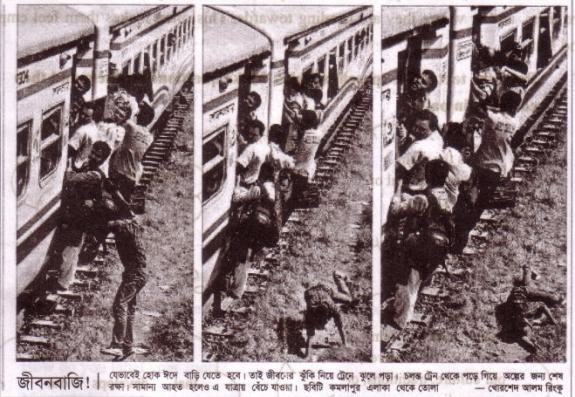

Unit Twelve
Roots

Learning outcomes
After we have studied the unit, we will able to
-
participate in conversations and debates.
-
exchange personal information.
-
narrate incidents and events in a logical sequence.
-
present own ideas, give and ask for information.
-
write letters to problem pages-of newspapers.
-
make complains.
-
Present information in a chart
Lesson 1: My roots
A . Look at the pictures and the caption below. How do you feel to see this photo? Why do you think people take such risks to go home to celebrate their Eid?

B . Read the following text.
Eid is the main religious festival of the Muslims in Bangladesh. Eid means happiness. Everyone wants to share this happiness with their near and dear ones. So most of the people, who are living outside their homes for different reasons have a strong desire to get back home during the Eid vacations. As a result, there is a mad rush in the buses, trains, or launches for the home-bound people. This often causes transport accidents that take away many lives. However, it cannot stop people's desire to meet their family, in-laws, or friends. What makes people rush for their homes in spite of serious hazards? This is the pull of the roots. Do human beings have roots like the trees? The answer is `yes' but unlike the roots of the trees they are invisible, they lie in our minds. It's these roots that make a bond between us and family members, in-laws, friends, neighbours or even between us and the land where we were born and grew up. In that sense our families, land of birth, relatives, our culture, traditions, or surroundings are our roots.
142And whereever we stay, we have a continuous pull of our roots. It's our roots that develop our identity making us what we are. When we lose that bond, we become rootless. Human beings who do not have any roots or contexts, are a non-entity. In other words, they do not have their own identity. Such persons are devoid of values, humanity, and social responsibilities. They don't know where they are from, and/or where they are heading towards. This often makes them feel empty and lost.
C . Read the text in the speech babbles. Make questions for them and then compare in pairs.
|
Eid is the main religious festival of the Muslims in Bangladesh. |
Eid means happiness. |
|
In that sense our families, land of birth, relatives, our culture, traditions, or surroundings are our roots. |
It's our root that develops our identity making us what we are. |
D . Fill in the grid with appropriate information from the text above.
|
That makes our roots |
The problems of a rootless person |
| l.[dash] 2. [dash] 3. [dash] 4. [dash] 5. [dash] | l. [dash] 2. [dash] 3. [dash] 4. [dash] 5. [dash] |
E . Work in pairs. Talk about these questions.
1. Do you have any root other than the place where you are living now? If
yes, where is it and who are there? If not, why not?
-
How do you label your roots?
My roots belong to
|
an extreme rural village |
a village |
a semi-urban area (upazila) | |
|
a small town |
a moderate city |
a suburb |
a city |
3. Do you feel any attraction for or pull of your roots?
4. How do you nourish your roots?
5 . What, according to you, are the reasons why people become rootless?
F . Make a classroom survey and present in a chart the types of roots your classmates have.
144Lesson 2: My roots -2
A . Read the following remarks and find out who is like you.
I simply just can't bear the people who don't have any respect for their roots.
- Haridas Soren
We have a moderately big house in a town but we frequently go to our village home as well. I always feel so homely when I visit my village home and stay with my near ones.
- Bidisha Yasmin
I live in a small apartment with my mum, dad, and my little sister. Most of our in-laws live in a village. We seldom go over there as I don't like village life.
- Ifti Mahmud
Some people are so eager to leave their own home, friends, and everything behind only to be a part of the city life. They are not for me.
- Antara Gomes
To be frank, I don't get used to visiting my in-laws at the village.
- Jhilik Ahsan
I live in a city but I never forget my parents are from a tiny beautiful village,. I know I have my roots there and I'm so proud of that.
- Anupom Chakma
I just can't stand the people who are grown up in the village but forget it once they are out from there.
- Debashish Biswash
Now make your own,: statement about your roots.
B . Read the above statements of different people again and make two lists one stating their likes and the other stating their dislikes.
145C . Do you agree/disagree with their statements? Write down why.
D . Read the following text.
Mainul Islam is a qualified farmer in Naogaon. Mr Islam was very brilliant as a student. He took his higher education from Bangladesh Agricultural University in Mymensingh. After completing his higher education, Mainul came back home and started advanced farming. He has two other brothers who are graduates in different areas. The specialty of the Islam family is that they all are living in their village and all have fame in their own fields. His younger brother, who is a Rajshahi University graduate, is a science teacher in a local school. His youngest brother is a- social science graduate and he too would like to start a local NGO to work for this area. When asked "What makes you decide to stay here in this village?" , Mr Islam smiled. He said, "Look, it's true that we could leave this village for a city life. I could be an officer or my brother could be a bureaucrat. But it didn't attract us. We are sons of this soil. Yes, we have education but does education prepare a person only to be an officer? Don't we have any obligation to the soil that has made us what we are?" He also added that every educated individual shouldn't be a job seeker. He continued that since his discipline was Agriculture, after his education he took the occupation of a farmer. In response to the question whether they have any frustrations to live in a village, he confirmed that they were very pleased with their life. He said, "I work in my own farm, stay with my family members, pass time with my old friends, and sleep at my own home. All these count a lot."
Mr Islam is right. Many people go to cities and forget or loosen their roots knowingly or unknowingly. Mr Islam and his brothers are great - they never forgot their roots. They not only stuck to their own roots, they have been torch bearers for others to be respectful of their own roots.
E . Work in pairs. If you are given a chance to meet Mr Islam, what questions would you ask him? Make both wh-questions and yes/no questions.
146F . Read the statements in columns A and B. Then match them to make complete sentences.
|
Column A |
Column B |
| 1. Mr Islam 2. The specialty of Islam's brothers is 3. Mr Islam never believes that 4. Mr Islam also believes 5. Staying with the roots | a. if anyone has education she/he has to have a job. b. has multi-faced opportunities. c. graduated from Bangladesh Agriculture University. d. in the duty toward roots. e. that city life couldn't attract them. |
G . Do you like Mr Islam? Why/ Why not? Write some reasons in favour of your opinio ns and share with your partner.
Lesson 3: The return of the native
A . Read the following text.
Michael Madhusudan Dutt was a popular 19th-century Bengali poet and dramatist. He was born in Sagordari on the bank of the Kopotaksho River, a village in Keshobpur Upazila under Jessore district.
From an early age, Dutt aspired to be an Englishman in form and manner. Though he was born in a sophisticated Hindu family, he took Christianity as a young man, much to the ire of his family, and adopted the first name Michael. In his childhood, he was recognized by his teachers as a precious child with a gift of literary talent. His early exposure to English education and European literature at home and his college inspired him to imitate the English in taste, manners and intellect.
Since his adolescence he started believing that he was born on the wrong side of the planet, and that his society was unable to appreciate his intellect. He also believed that the West would be more receptive to his creative genius Michael was an ardent follower of the famous English poet Lord Byron.
147So after adopting Christianity, he went to Europe and started composing poetry and drama almost entirely in English. They showed his higher level of intellectual ability. However, he failed to gain the right appreciation. To his utter frustrations he found that he was not esteemed as a native writer of English literature. Out of his frustration, he composed a sonnet in Bangla "Kopotaksha Nad", which earned him huge reputation in Bangla. Gradually he could realize that his true identity lay in this Bengal and he was a sojourner in Europe. Afterwards he regretted his attraction for England and the west. He came to Bengal and devoted himself to Bangla literature from this period. He is the poet to write the first Bangla epic Meghand Badh Kabya.
(Source: Wikipedia)
B . Work in pairs and decide how the story of Michael is related to the unit theme Roots.
C . Read some more information on Michael. Make questions for those statements.
a.
He introduced amitrakshar chhanda(blank verse) in Bangla literature.
b.
Michael passed most of his European days in Versailles, France.
c.
His days in Europe were terrible.
d.
It was unbearable to him as he had to suffer extreme poverty.
e.
It was Iswar Chandra Bidyasagarwho helped him to clear off his loans and return to India.
f .
Dutt married twice. While living in Madras, he married Rebecca Mactavys of English descent.
148g.
Later he married Henrietta Sophia White, who was also ethnic English.
h.
His second marriage lasted until the end of his life.
i.
Michael and Sophia had a son Napoleon and daughter Sharmistha.
j.
Dutt died in Calcutta General Hospital on 27 June 1873, three days after the death of Henrietta.
D . Write notes about Michael under the following headings. One example is given for you.
|
Michael as a man |
Michael as a poet |
Attitude to his roots |
|
- |
|
- |
Lesson 4: In search of identity
A . Do you ever read the Problem Page in magazines or newspapers? What kinds of problems do people often write about?
B . Here are two letters from the problem page in the Daily Bangladesh. Read them and discuss with a partner what you think the content of the letters is. Use a dictionary to check any new words.
149| Avajon's Problem page you aren’t alone …….. |
| Dear Avajon Often I'm so sorry to see the footpaths occupied by floating people. They are living in some makeshift houses. I simply cannot think how father, mother grandfather, grandmother and kids are living in such a tiny place. Within few yards in their possession they are sleeping, socializing, cooking and even beautifying themselves. These people are living in such an inhuman condition! This cannot be the picture of life in a civilized society. Also they are polluting the area. They are the least bothered about their health and hygiene. Out of my curiosity, I talked to some of these people: They have their own home and identity at their own village. They are here thinking that the city life will make their life better. What an irony! Can't the society or the state do anything for these people? However, I must admit that I'm amazed to see how they sometimes tidy up the place especially in the evening!! Home, sweet home after all ! Mithun |
| Dear Mithun I understand your concern. Human flow from the rural areas to the urban areas is a big social problem in many countries like ours. These floating people are definitely a burden to the cities where they migrate. When the number is huge, it is difficult for any state to rehabilitate them quickly. See from the other side. The people you have referred to have lost their roots and they are unable to assimilate in the new culture. Maybe many of them are attracted by the gloss of the cities, but I'm sure it was a need to many others. People become rootless sometimes due to climate change, river erosion, social discrepancies, or poverty. However, you cannot solve this problem overnight. But you can take steps to improve their lifestyle. Why don't you form a committee with other young people in your locality that will teach them basic health, hygiene, and ethics? It may better their life as well as help you minimize pollution. Give it a try. Yours Avajon |
C . Look at the texts. Say who/what they, their, this, that, it refer to in the following sentences.
a. They are living in some makeshift houses.
b. Within few yards in their possession they are sleeping, socializing, cooking and even beautifying themselves.
c. This cannot be the picture of life in a civilized society.
d. Why don't you form a committee with other young people in your locality that will teach them basic health, hygiene, and ethics?
e. Give it a try.
D . Work in pairs. First write two problem letters. It can be a personal problem or a problem in your locality as in B . Read your partner's problem and give suggestions.
E Work in groups. Take roles as a TV Anchor, Mojnu Mia, Fazlur Rahman, and Nilima Chowdhury as stated in the following text. Put suitable verb form into each gap of the text related to your role. Then act out the talk show.
TV Anchor : Viewers, [dash] to our program `Looking back to roots'. Today we [dash] three guests with us- Mr Mojnu Mia, a slum dweller, Mr Fazlur Rahman, an immigrant to UK, and a social Scientist Nilima Chowdhury. Today we [dash] to see how people [dash] when they are detached from their roots, what might [dash] some consequences, and how a social scientist [dash] them. Let me [dash] with Mojnu Mia. Mojnu Mia, where [dash] you from and why and how you [dash] to this city?
151Mojnu Mia : I'm from Sherpur. You [dash] it's a river erosion-prone area. The river has washed away most of my agricultural land. It has [dash] my home as well. Now you can [dash] that I'm a refugee. I and my family members [dash] to this city with the last savings. But I'm fed up with the life here. I [dash] vegetables as a hawker. I [dash] very hard. I can't [dash] any time to my wife or kids. I [dash] in a slum. It's very dirty. People are sometimes involved in different sorts of crime. My kids don't [dash] it. Neither my wife or me. In the village, everybody used to [dash] us but here no one knows me. I have nowhere to [dash], none to [dash] beside me. Nobody [dash] me. I [dash] the city will give me a moderate life. But I'm mistaken.
TV anchor : Right. We are really sorry to [dash] about your situation. Now let us [dash] to Mr Fazlur Rahman. Fazlu Bhai, why did you [dash] your country and how are you feeling in the UK?
Fazlur Rahman: Well I was young when I went to UK. My first few years were terrible. I [dash] all kinds of odd jobs. Gradually I [dash] experience. I [dash] different professional training courses. And over the period my language [dash] Now I'm a citizen there. I [dash] my own detached home, personal car, and business. When I [dash] there I was a poor man but now I'm a rich man. I [dash] a good amount of income tax but to be honest, when I [dash] to my own country, I wish I should not [dash] to UK. It's my own country. I [dash] my friends and family members here. I miss my culture, tradition, food, and what not? I [dash] there for more than 15 years but still there is a distinction between the native people and expatriates like me. Perhaps we will never shake of our identity as foreigners.
152TV Anchor : Ok, let us [dash] the explanation of these problems from a social scientist, Nilima Chowdhury. Ms Chowdhury, what are your interpretations about these problems.
Nilima Chowdhury: You see, this problem is often [dash] diaspora. It means migration, or scattering of people away from an established or ancestral homeland. There might be different reasons for that. It may be due to government action, political decisions or to avoid conflict and warfare. Diaspora has come common consequences. Once people are away from their roots, they have a kind of cultural shocked. They take time to [dash] to the new culture. Sometimes never integrated. This [dash] them a feeling of home sickness. Due to economic or social realities in spite of their strong fascination for homeland or hometown diaspora people [dash] to get back to their roots. As a result, they have a kind of mental conflict and identity crisis which makes their life restless. Sometimes lack of social acceptance coupled with the economic inability, inadequate education, and loose family ties people [dash] involved in crimes. You may ask, “Does it [dash] that people won`t [dash] to other cities/countries”?. People will, as its 21st century when the world is a big global village. But we [dash] to be aware of the problems created from diaspora. It`s reality that people with better ties with their roots are less sufferer of this problem. So instead of being allured by the ‘better life’ we can [dash] to be happy with what we have and gradually try to develop our condition without forgetting our roots.
153